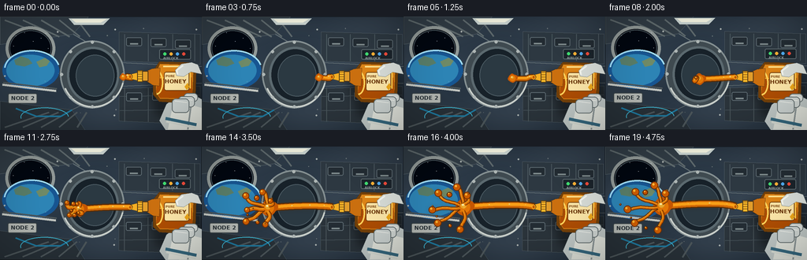
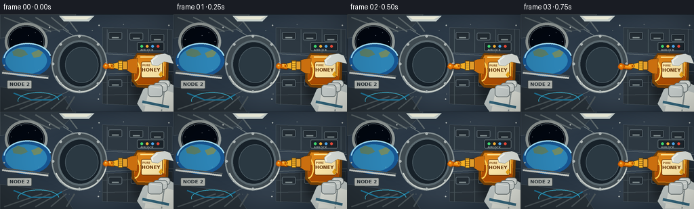

CODING AGENTS AS PIXEL WORLD MODELS
traex/GPT-5.6-Sol · phygen_004
点击播放 · 原生 RGB 像素
逐轮保存的候选
回放视频、检查图与代码变化。
每份候选均可单独播放。实际图片检查记录在下方工具轨迹中。
候选 01播放与检查图
点击播放 · 原生 RGB 像素

展开代码变化
--- 上一保存版本
+++ 本次保存版本
@@ -0,0 +1,272 @@
+from pathlib import Path
+import math
+import numpy as np
+from PIL import Image, ImageDraw, ImageFont, ImageFilter
+import artifact_io
+
+W,H,N = 256,144,20
+S=3
+SW,SH=W*S,H*S
+ROOT=Path(__file__).resolve().parent
+
+def sc(v): return int(round(v*S))
+def pts(arr): return [(sc(x),sc(y)) for x,y in arr]
+
+def font(size,bold=False):
+ path='/usr/share/fonts/truetype/dejavu/DejaVuSans-Bold.ttf' if bold else '/usr/share/fonts/truetype/dejavu/DejaVuSans.ttf'
+ try: return ImageFont.truetype(path,sc(size))
+ except: return ImageFont.load_default()
+
+F4=font(4,True); F5=font(5,True); F7=font(7,True); F8=font(8,True); F10=font(10,True)
+
+def rounded(draw, box, r, fill, outline=None, width=1):
+ draw.rounded_rectangle(tuple(sc(v) for v in box), radius=sc(r), fill=fill, outline=outline, width=sc(width))
+
+def make_background():
+ # cool, vignetted station interior
+ yy,xx=np.mgrid[0:SH,0:SW]
+ nx=xx/SW; ny=yy/SH
+ light=1.0-0.42*np.sqrt((nx-.48)**2+(ny-.42)**2)
+ bands=4*np.sin(nx*9+ny*3)+2*np.sin(ny*17)
+ arr=np.zeros((SH,SW,3),dtype=np.float32)
+ arr[...,0]=(27+22*light+bands)
+ arr[...,1]=(35+28*light+bands)
+ arr[...,2]=(43+34*light+bands)
+ img=Image.fromarray(np.clip(arr,0,255).astype(np.uint8),'RGB')
+ d=ImageDraw.Draw(img)
+ # left bulkhead perspective and ceiling rails
+ d.polygon(pts([(0,0),(112,0),(92,22),(0,35)]), fill=(49,60,69), outline=(104,117,122))
+ d.polygon(pts([(0,144),(108,144),(91,118),(0,107)]), fill=(39,48,55), outline=(86,99,105))
+ d.line(pts([(93,22),(153,58),(256,63)]),fill=(104,116,120),width=sc(1))
+ d.line(pts([(91,118),(153,88),(256,84)]),fill=(98,109,112),width=sc(1))
+ for k in range(5):
+ x=6+k*23
+ d.line(pts([(x,4),(62+k*13,25)]), fill=(94,105,108), width=sc(2))
+ d.line(pts([(x,140),(62+k*12,121)]), fill=(75,85,89), width=sc(2))
+ # wall panel seams and inset equipment racks
+ d.polygon(pts([(151,19),(254,22),(254,60),(151,56)]),fill=(45,56,65),outline=(91,104,111))
+ d.polygon(pts([(151,91),(254,88),(254,137),(151,132)]),fill=(42,51,58),outline=(84,96,102))
+ for x in [158,188,219,247]:
+ d.line(pts([(x,22),(x,56)]),fill=(76,89,96),width=sc(1))
+ d.line(pts([(x,90),(x,133)]),fill=(73,84,89),width=sc(1))
+ for y in [101,119]: d.line(pts([(152,y),(254,y-2)]),fill=(72,84,90),width=sc(1))
+ # handles and panel details
+ for bx,by in [(160,26),(191,27),(222,29),(160,96),(193,95),(224,94)]:
+ rounded(d,(bx,by,bx+20,by+11),2,(35,44,51),(91,104,111),1)
+ d.line(pts([(bx+5,by+8),(bx+15,by+8)]),fill=(125,137,139),width=sc(2))
+ rounded(d,(202,41,242,54),2,(27,36,43),(93,106,111),1)
+ for i,c in enumerate([(65,220,113),(250,176,54),(80,171,239),(239,75,59)]):
+ d.ellipse((sc(207+i*8),sc(45),sc(211+i*8),sc(49)), fill=c)
+ d.text((sc(207),sc(50)),"AIRLOCK",font=F4,fill=(148,158,159))
+ # central hatch giving corridor depth
+ d.ellipse((sc(76),sc(30),sc(158),sc(116)), fill=(63,74,80), outline=(132,143,145), width=sc(2))
+ d.ellipse((sc(85),sc(38),sc(151),sc(109)), fill=(23,33,41), outline=(91,105,111), width=sc(3))
+ d.ellipse((sc(96),sc(48),sc(145),sc(101)), fill=(43,57,66), outline=(76,91,99), width=sc(1))
+ d.arc((sc(78),sc(31),sc(158),sc(115)),15,155,fill=(201,207,202),width=sc(2))
+ # hatch latches
+ for a in range(0,360,45):
+ cx=117+39*math.cos(math.radians(a)); cy=73+41*math.sin(math.radians(a))
+ d.ellipse((sc(cx-2),sc(cy-2),sc(cx+2),sc(cy+2)),fill=(173,181,180))
+ # porthole window upper-left with Earth limb
+ d.ellipse((sc(7),sc(12),sc(70),sc(68)),fill=(15,18,25),outline=(145,153,151),width=sc(4))
+ d.ellipse((sc(12),sc(17),sc(65),sc(63)),fill=(2,7,16),outline=(71,85,91),width=sc(1))
+ # stars
+ stars=[(20,24),(31,20),(52,27),(58,21),(17,37),(42,31),(61,40)]
+ for x,y in stars:
+ d.ellipse((sc(x)-1,sc(y)-1,sc(x)+1,sc(y)+1),fill=(213,226,238))
+ # Earth as curved blue limb in lower portion of window
+ d.ellipse((sc(3),sc(44),sc(75),sc(92)),fill=(23,85,145))
+ d.ellipse((sc(8),sc(48),sc(69),sc(88)),fill=(45,132,181))
+ d.arc((sc(5),sc(42),sc(76),sc(91)),185,346,fill=(161,222,247),width=sc(2))
+ d.polygon(pts([(18,55),(26,50),(36,53),(41,59),(31,63),(20,61)]),fill=(88,125,105))
+ d.polygon(pts([(46,57),(57,52),(63,56),(59,62),(50,64)]),fill=(111,138,103))
+ # handrails, cable, labels
+ d.line(pts([(3,86),(71,94)]),fill=(192,196,191),width=sc(3))
+ d.line(pts([(4,83),(72,91)]),fill=(77,86,89),width=sc(2))
+ rounded(d,(10,97,47,110),2,(177,181,176),(59,68,71),1)
+ d.text((sc(14),sc(99)),"NODE 2",font=F7,fill=(38,47,52))
+ d.line(pts([(20,116),(46,126),(77,126),(91,118)]),fill=(30,117,153),width=sc(2))
+ d.arc((sc(26),sc(115),sc(87),sc(139)),170,358,fill=(60,177,205),width=sc(1))
+ # overhead soft lamps
+ d.polygon(pts([(87,2),(139,2),(131,10),(94,10)]),fill=(201,211,207))
+ d.polygon(pts([(91,3),(135,3),(128,7),(96,7)]),fill=(244,244,225))
+ # screws
+ for x,y in [(73,19),(146,16),(145,125),(249,16),(249,140),(6,75)]:
+ d.ellipse((sc(x-1),sc(y-1),sc(x+1),sc(y+1)),fill=(169,176,174))
+ return img
+
+BG=make_background()
+
+def draw_soft_shadow(base, shapes, blur=5, alpha=90):
+ lay=Image.new('RGBA',(SW,SH),(0,0,0,0)); d=ImageDraw.Draw(lay)
+ shapes(d)
+ lay=lay.filter(ImageFilter.GaussianBlur(sc(blur)))
+ base.alpha_composite(lay)
+
+def draw_bottle_and_hand(img,t):
+ # minimal drift as the astronaut squeezes
+ dy=0.7*math.sin(t*math.pi)
+ d=ImageDraw.Draw(img,'RGBA')
+ # broad shadow cast over rack
+ shadow=Image.new('RGBA',(SW,SH),(0,0,0,0)); sd=ImageDraw.Draw(shadow)
+ sd.polygon(pts([(180,68+dy),(252,69+dy),(261,128+dy),(199,127+dy)]),fill=(0,0,0,85))
+ shadow=shadow.filter(ImageFilter.GaussianBlur(sc(5))); img.alpha_composite(shadow)
+ d=ImageDraw.Draw(img,'RGBA')
+ # white EVA/IVA glove entering at lower right, wrist first
+ d.polygon(pts([(256,105),(244,98+dy),(226,100+dy),(211,111+dy),(202,132+dy),(210,144),(256,144)]),
+ fill=(189,197,195,255),outline=(75,87,91,255))
+ d.polygon(pts([(256,116),(239,111+dy),(218,119+dy),(213,143),(256,144)]),fill=(222,225,217,255))
+ d.line(pts([(242,113+dy),(238,143)]),fill=(139,149,149,255),width=sc(2))
+ # glove cuff rings
+ d.line(pts([(210,129+dy),(249,137+dy)]),fill=(54,104,126,255),width=sc(4))
+ d.line(pts([(211,133+dy),(248,141+dy)]),fill=(214,219,211,255),width=sc(3))
+ # bottle amber shadow/back outline, narrowing shoulder to nozzle left
+ squeeze=2.8*math.sin(math.pi*min(1,t*1.15))
+ body=[(202,57+dy),(240,58+dy),(249,68+dy),(248,100+dy),(239,110+dy),(202,108+dy),
+ (194,99+dy+squeeze),(194,69+dy-squeeze)]
+ d.polygon(pts(body),fill=(115,64,9,255),outline=(61,43,26,255))
+ # transparent golden plastic body
+ inner=[(203,60+dy),(237,61+dy),(245,69+dy),(244,97+dy),(236,105+dy),(203,104+dy),
+ (198,96+dy+squeeze),(198,72+dy-squeeze)]
+ d.polygon(pts(inner),fill=(220,132,24,235))
+ # viscous honey mass inside bottle
+ d.polygon(pts([(200,78+dy),(243,77+dy),(244,97+dy),(236,104+dy),(203,103+dy),(198,95+dy+squeeze)]),
+ fill=(173,77,4,210))
+ d.line(pts([(201,78+dy),(241,77+dy)]),fill=(255,194,51,230),width=sc(1))
+ # squeezed side indent emphasizes hand pressure
+ d.arc((sc(190),sc(68+dy),sc(207),sc(99+dy)),270,88,fill=(255,210,90,230),width=sc(2))
+ # shoulder and neck aimed left
+ d.polygon(pts([(203,65+dy),(193,66+dy),(186,69+dy),(186,82+dy),(194,87+dy),(202,88+dy)]),
+ fill=(202,111,15,255),outline=(74,47,19,255))
+ d.rectangle((sc(178),sc(69+dy),sc(188),sc(82+dy)),fill=(226,157,42,255),outline=(78,52,21,255),width=sc(1))
+ # ridged yellow nozzle cap and tapered dispensing tip
+ d.rectangle((sc(174),sc(68+dy),sc(181),sc(83+dy)),fill=(245,184,42,255),outline=(78,58,25,255),width=sc(1))
+ for yy in [70,73,76,79]: d.line(pts([(175,yy+dy),(180,yy+dy)]),fill=(163,101,18,255),width=sc(1))
+ d.polygon(pts([(174,71+dy),(166,73+dy),(166,79+dy),(174,81+dy)]),fill=(244,175,35,255),outline=(76,53,19,255))
+ d.ellipse((sc(163.5),sc(73+dy),sc(168),sc(79+dy)),fill=(85,48,10,255))
+ # highlights on bottle
+ d.line(pts([(207,63+dy),(232,63+dy)]),fill=(255,223,136,210),width=sc(2))
+ d.line(pts([(241,69+dy),(241,91+dy)]),fill=(255,199,73,190),width=sc(2))
+ # cream label
+ d.rounded_rectangle((sc(208),sc(70+dy),sc(240),sc(94+dy)),radius=sc(3),fill=(252,230,168,245),outline=(116,62,11,255),width=sc(1))
+ d.text((sc(210),sc(73+dy)),"PURE",font=F4,fill=(121,67,15,255))
+ d.text((sc(209),sc(78+dy)),"HONEY",font=F7,fill=(103,51,7,255))
+ d.polygon(pts([(234,89+dy),(238,84+dy),(240,89+dy),(237,93+dy)]),fill=(236,166,25,255))
+ # grasping fingers over bottle
+ # upper thumb pressing inward
+ d.polygon(pts([(251,61+dy),(243,58+dy),(230,60+dy),(222,68+dy),(224,75+dy),(233,76+dy),(242,70+dy),(256,73)]),
+ fill=(216,221,216,255),outline=(94,105,106,255))
+ d.line(pts([(232,62+dy),(224,68+dy),(225,73+dy)]),fill=(244,246,238,255),width=sc(2))
+ # three curled fingers below
+ for i,(x0,y0,x1,y1) in enumerate([(233,97,251,108),(226,101,247,115),(218,104,240,122)]):
+ d.rounded_rectangle((sc(x0),sc(y0+dy),sc(x1),sc(y1+dy)),radius=sc(5),fill=(211-i*5,216-i*4,212-i*3,255),outline=(96,107,108,255),width=sc(1))
+ d.line(pts([(x0+4,y0+3+dy),(x1-3,y0+5+dy)]),fill=(242,244,237,255),width=sc(1))
+
+
+def bezier(p0,p1,p2,p3,u):
+ v=1-u
+ return (v**3*p0[0]+3*v*v*u*p1[0]+3*v*u*u*p2[0]+u**3*p3[0],
+ v**3*p0[1]+3*v*v*u*p1[1]+3*v*u*u*p2[1]+u**3*p3[1])
+
+def honey_layer(t,dy):
+ # Honey originates from nozzle. The head travels left while the rope remains attached.
+ p=0.05+0.95*(t*t*(3-2*t))
+ xhead=164-92*(p**0.82)
+ yhead=76 + 5.5*math.sin(p*2.55) - 3*p
+ # Curved zero-g stream: no downward ballistic arc
+ p0=(165,76+dy); p1=(151,73+dy+4*math.sin(t*4)); p2=(xhead+28,82-9*p); p3=(xhead,yhead)
+ curve=[bezier(p0,p1,p2,p3,u) for u in np.linspace(0,1,55)]
+ layer=Image.new('RGBA',(SW,SH),(0,0,0,0)); d=ImageDraw.Draw(layer,'RGBA')
+ # amber halo and thick core
+ d.line(pts(curve),fill=(91,42,0,230),width=sc(7+3*p),joint='curve')
+ d.line(pts(curve),fill=(209,104,5,255),width=sc(5+2.3*p),joint='curve')
+ d.line(pts([(x,y-0.7) for x,y in curve]),fill=(247,159,24,255),width=sc(2.5+1.2*p),joint='curve')
+ # irregular leading floating bulb, surface-tension rounded
+ r=3.6+7.2*p
+ lobes=[(0,0,1.0),(r*.65,-r*.18,.62),(-r*.55,r*.13,.55),(-r*.08,-r*.65,.51),(r*.08,r*.62,.47)]
+ for ox,oy,k in lobes:
+ rr=r*k
+ d.ellipse((sc(xhead+ox-rr),sc(yhead+oy-rr),sc(xhead+ox+rr),sc(yhead+oy+rr)),fill=(196,86,2,255))
+ d.ellipse((sc(xhead-r*.72),sc(yhead-r*.76),sc(xhead+r*.73),sc(yhead+r*.72)),fill=(226,119,6,255))
+ d.ellipse((sc(xhead-r*.42),sc(yhead-r*.52),sc(xhead+r*.28),sc(yhead+r*.12)),fill=(255,177,35,220))
+ d.ellipse((sc(xhead-r*.28),sc(yhead-r*.42),sc(xhead-r*.04),sc(yhead-r*.19)),fill=(255,239,165,245))
+
+ # Tendrils blossom radially in microgravity after enough honey accumulates.
+ branches=[(-1.0,-.57,28,.36),(-.92,.56,32,.43),(-.35,-1.0,22,.52),(-.18,1.0,25,.59),(-1.0,.08,38,.64),(.20,-.83,15,.69)]
+ for j,(dx,dyb,L,threshold) in enumerate(branches):
+ q=max(0,min(1,(p-threshold)/(1-threshold)))
+ if q<=0: continue
+ ease=q*q*(3-2*q)
+ sx=xhead + dx*r*.55; sy=yhead+dyb*r*.45
+ ex=sx+dx*L*ease; ey=sy+dyb*L*ease
+ # undulating outward path
+ nx,ny=-dyb,dx
+ bpts=[]
+ for u in np.linspace(0,1,20):
+ bend=math.sin(u*math.pi)*((j%3)-1)*3 + math.sin(u*2*math.pi+j)*1.1
+ bpts.append((sx+(ex-sx)*u+nx*bend,sy+(ey-sy)*u+ny*bend))
+ wid=max(2,5.5-2.8*ease)
+ d.line(pts(bpts),fill=(106,46,0,245),width=sc(wid+2),joint='curve')
+ d.line(pts(bpts),fill=(220,108,3,255),width=sc(wid),joint='curve')
+ d.line(pts([(x-.4,y-.7) for x,y in bpts]),fill=(250,164,25,225),width=sc(max(1,wid*.35)),joint='curve')
+ rr=2.2+2.6*ease
+ d.ellipse((sc(ex-rr),sc(ey-rr),sc(ex+rr),sc(ey+rr)),fill=(202,91,1,255),outline=(110,47,0,255),width=sc(1))
+ d.ellipse((sc(ex-rr*.55),sc(ey-rr*.60),sc(ex),sc(ey)),fill=(255,184,47,240))
+
+ # detached satellite droplets drifting in multiple directions
+ drops=[(-1.0,-.72,23,.48,3.1),(-.68,1.0,28,.55,2.5),(-1.0,.35,39,.61,2.0),(.2,-1.0,22,.66,1.8),(-.25,1.0,37,.73,1.5),(-1.0,-.05,52,.79,1.3)]
+ for j,(dx,ddy,L,th,rr0) in enumerate(drops):
+ q=max(0,min(1,(p-th)/(1-th)))
+ if q<=0: continue
+ dist=L*(0.15+0.85*q)
+ cx=xhead+dx*dist+2*math.sin(j*2+t*2)
+ cy=yhead+ddy*dist+1.4*math.cos(j+t*3)
+ rr=rr0*(.8+.3*math.sin(j+q*2))
+ d.ellipse((sc(cx-rr),sc(cy-rr),sc(cx+rr),sc(cy+rr)),fill=(192,80,0,255),outline=(89,38,0,255),width=sc(1))
+ d.ellipse((sc(cx-rr*.55),sc(cy-rr*.65),sc(cx-rr*.05),sc(cy-rr*.15)),fill=(255,194,61,255))
+ # small bright highlight riding the base stream
+ for u in [.18,.42,.67]:
+ if u > p+.25: continue
+ x,y=bezier(p0,p1,p2,p3,u)
+ rr=0.65+0.4*math.sin(u*12+t*2)
+ d.ellipse((sc(x-rr),sc(y-rr-1),sc(x+rr),sc(y+rr-1)),fill=(255,224,130,220))
+ # gentle halo confined around honey
+ glow=layer.copy().filter(ImageFilter.GaussianBlur(sc(3)))
+ glow.putalpha(glow.getchannel('A').point(lambda a:int(a*.18)))
+ out=Image.new('RGBA',(SW,SH),(0,0,0,0)); out.alpha_composite(glow); out.alpha_composite(layer)
+ return out
+
+
+def render(i):
+ t=i/(N-1)
+ # tiny stabilized camera drift, gives life without distracting from fluid growth
+ ox=0.45*math.sin(t*math.pi*2)
+ oy=0.3*math.cos(t*math.pi*1.7)
+ base=Image.new('RGBA',(SW,SH),(0,0,0,255))
+ bg=BG.transform((SW,SH),Image.Transform.AFFINE,(1,0,-sc(ox),0,1,-sc(oy)),resample=Image.Resampling.BICUBIC)
+ base.alpha_composite(bg.convert('RGBA'))
+ # a few suspended dust motes, moving slowly in zero g
+ dust=Image.new('RGBA',(SW,SH),(0,0,0,0)); dd=ImageDraw.Draw(dust)
+ for j,(x,y) in enumerate([(74,72),(136,24),(102,122),(182,15),(57,82),(147,118)]):
+ xx=x+2.4*t*math.cos(j*1.8); yy=y+1.8*t*math.sin(j*2.1)
+ r=.35+(j%2)*.18
+ dd.ellipse((sc(xx-r),sc(yy-r),sc(xx+r),sc(yy+r)),fill=(226,229,213,90))
+ base.alpha_composite(dust)
+ dy=.7*math.sin(t*math.pi)
+ # Honey is behind the nozzle but in front of station.
+ base.alpha_composite(honey_layer(t,dy))
+ draw_bottle_and_hand(base,t)
+ # Restore a tiny wet meniscus over the nozzle rim, visually joining bottle to stream.
+ d=ImageDraw.Draw(base,'RGBA')
+ d.ellipse((sc(162.7),sc(73.5+dy),sc(167.2),sc(79.1+dy)),fill=(191,88,3,245),outline=(248,171,31,255),width=sc(1))
+ # cinematic edge vignette
+ arr=np.asarray(base.convert('RGB')).astype(np.float32)
+ yy,xx=np.mgrid[0:SH,0:SW]; dx=(xx-SW*.5)/(SW*.72); dyv=(yy-SH*.5)/(SH*.75)
+ vig=np.clip(1-.26*np.maximum(0,dx*dx+dyv*dyv-.18),.68,1)[...,None]
+ arr=np.clip(arr*vig,0,255).astype(np.uint8)
+ im=Image.fromarray(arr).resize((W,H),Image.Resampling.LANCZOS)
+ return np.asarray(im,dtype=np.uint8)
+
+frames=np.stack([render(i) for i in range(N)],axis=0)
+artifact_io.save(frames,ROOT)
+print('saved',frames.shape,frames.dtype)
可观测工具轨迹
实际执行的命令与返回图片。
命令 1exit 0
/bin/bash -lc "cat prompt.txt && printf '\\n---RULES---\\n' && cat GENERATION_RULES.md && printf '\\n---SPEC---\\n' && cat task_spec.json"
命令 2exit 1
/bin/bash -lc "find . -maxdepth 2 -type f -printf '%p\\n' | sort && printf '\\nTOOLS\\n' && command -v ffmpeg && command -v python3 && python3 - <<'PY'
try:
import cv2; print('cv2',cv2.__version__)
except Exception as e: print('no cv2',e)
try:
from PIL import Image; print('PIL ok')
except Exception as e: print('no PIL',e)
PY"命令 3exit 0
/bin/bash -lc "cat artifact_io.py; printf '\\n--- bins ---\\n'; command -v python3 || true; command -v ffmpeg || true; python3 - <<'PY' mods=['numpy','PIL','cv2','imageio'] for m in mods: try: x=__import__(m); print(m,getattr(x,'__version__','ok')) except Exception as e: print(m,'ERR',e) PY"
命令 4exit 0
/bin/bash -lc "cat > generate.py <<'PY'
from pathlib import Path
import math
import numpy as np
from PIL import Image, ImageDraw, ImageFont, ImageFilter
import artifact_io
W,H,N = 256,144,20
S=3
SW,SH=W*S,H*S
ROOT=Path(__file__).resolve().parent
def sc(v): return int(round(v*S))
def pts(arr): return [(sc(x),sc(y)) for x,y in arr]
def font(size,bold=False):
path='/usr/share/fonts/truetype/dejavu/DejaVuSans-Bold.ttf' if bold else '/usr/share/fonts/truetype/dejavu/DejaVuSans.ttf'
try: return ImageFont.truetype(path,sc(size))
except: return ImageFont.load_default()
F4=font(4,True); F5=font(5,True); F7=font(7,True); F8=font(8,True); F10=font(10,True)
def rounded(draw, box, r, fill, outline=None, width=1):
draw.rounded_rectangle(tuple(sc(v) for v in box), radius=sc(r), fill=fill, outline=outline, width=sc(width))
def make_background():
# cool, vignetted station interior
yy,xx=np.mgrid[0:SH,0:SW]
nx=xx/SW; ny=yy/SH
light=1.0-0.42*np.sqrt((nx-.48)**2+(ny-.42)**2)
bands=4*np.sin(nx*9+ny*3)+2*np.sin(ny*17)
arr=np.zeros((SH,SW,3),dtype=np.float32)
arr[...,0]=(27+22*light+bands)
arr[...,1]=(35+28*light+bands)
arr[...,2]=(43+34*light+bands)
img=Image.fromarray(np.clip(arr,0,255).astype(np.uint8),'RGB')
d=ImageDraw.Draw(img)
# left bulkhead perspective and ceiling rails
d.polygon(pts([(0,0),(112,0),(92,22),(0,35)]), fill=(49,60,69), outline=(104,117,122))
d.polygon(pts([(0,144),(108,144),(91,118),(0,107)]), fill=(39,48,55), outline=(86,99,105))
d.line(pts([(93,22),(153,58),(256,63)]),fill=(104,116,120),width=sc(1))
d.line(pts([(91,118),(153,88),(256,84)]),fill=(98,109,112),width=sc(1))
for k in range(5):
x=6+k*23
d.line(pts([(x,4),(62+k*13,25)]), fill=(94,105,108), width=sc(2))
d.line(pts([(x,140),(62+k*12,121)]), fill=(75,85,89), width=sc(2))
# wall panel seams and inset equipment racks
d.polygon(pts([(151,19),(254,22),(254,60),(151,56)]),fill=(45,56,65),outline=(91,104,111))
d.polygon(pts([(151,91),(254,88),(254,137),(151,132)]),fill=(42,51,58),outline=(84,96,102))
for x in [158,188,219,247]:
d.line(pts([(x,22),(x,56)]),fill=(76,89,96),width=sc(1))
d.line(pts([(x,90),(x,133)]),fill=(73,84,89),width=sc(1))
for y in [101,119]: d.line(pts([(152,y),(254,y-2)]),fill=(72,84,90),width=sc(1))
# handles and panel details
for bx,by in [(160,26),(191,27),(222,29),(160,96),(193,95),(224,94)]:
rounded(d,(bx,by,bx+20,by+11),2,(35,44,51),(91,104,111),1)
d.line(pts([(bx+5,by+8),(bx+15,by+8)]),fill=(125,137,139),width=sc(2))
rounded(d,(202,41,242,54),2,(27,36,43),(93,106,111),1)
for i,c in enumerate([(65,220,113),(250,176,54),(80,171,239),(239,75,59)]):
d.ellipse((sc(207+i*8),sc(45),sc(211+i*8),sc(49)), fill=c)
d.text((sc(207),sc(50)),\"AIRLOCK\",font=F4,fill=(148,158,159))
# central hatch giving corridor depth
d.ellipse((sc(76),sc(30),sc(158),sc(116)), fill=(63,74,80), outline=(132,143,145), width=sc(2))
d.ellipse((sc(85),sc(38),sc(151),sc(109)), fill=(23,33,41), outline=(91,105,111), width=sc(3))
d.ellipse((sc(96),sc(48),sc(145),sc(101)), fill=(43,57,66), outline=(76,91,99), width=sc(1))
d.arc((sc(78),sc(31),sc(158),sc(115)),15,155,fill=(201,207,202),width=sc(2))
# hatch latches
for a in range(0,360,45):
cx=117+39*math.cos(math.radians(a)); cy=73+41*math.sin(math.radians(a))
d.ellipse((sc(cx-2),sc(cy-2),sc(cx+2),sc(cy+2)),fill=(173,181,180))
# porthole window upper-left with Earth limb
d.ellipse((sc(7),sc(12),sc(70),sc(68)),fill=(15,18,25),outline=(145,153,151),width=sc(4))
d.ellipse((sc(12),sc(17),sc(65),sc(63)),fill=(2,7,16),outline=(71,85,91),width=sc(1))
# stars
stars=[(20,24),(31,20),(52,27),(58,21),(17,37),(42,31),(61,40)]
for x,y in stars:
d.ellipse((sc(x)-1,sc(y)-1,sc(x)+1,sc(y)+1),fill=(213,226,238))
# Earth as curved blue limb in lower portion of window
d.ellipse((sc(3),sc(44),sc(75),sc(92)),fill=(23,85,145))
d.ellipse((sc(8),sc(48),sc(69),sc(88)),fill=(45,132,181))
d.arc((sc(5),sc(42),sc(76),sc(91)),185,346,fill=(161,222,247),width=sc(2))
d.polygon(pts([(18,55),(26,50),(36,53),(41,59),(31,63),(20,61)]),fill=(88,125,105))
d.polygon(pts([(46,57),(57,52),(63,56),(59,62),(50,64)]),fill=(111,138,103))
# handrails, cable, labels
d.line(pts([(3,86),(71,94)]),fill=(192,196,191),width=sc(3))
d.line(pts([(4,83),(72,91)]),fill=(77,86,89),width=sc(2))
rounded(d,(10,97,47,110),2,(177,181,176),(59,68,71),1)
d.text((sc(14),sc(99)),\"NODE 2\",font=F7,fill=(38,47,52))
d.line(pts([(20,116),(46,126),(77,126),(91,118)]),fill=(30,117,153),width=sc(2))
d.arc((sc(26),sc(115),sc(87),sc(139)),170,358,fill=(60,177,205),width=sc(1))
# overhead soft lamps
d.polygon(pts([(87,2),(139,2),(131,10),(94,10)]),fill=(201,211,207))
d.polygon(pts([(91,3),(135,3),(128,7),(96,7)]),fill=(244,244,225))
# screws
for x,y in [(73,19),(146,16),(145,125),(249,16),(249,140),(6,75)]:
d.ellipse((sc(x-1),sc(y-1),sc(x+1),sc(y+1)),fill=(169,176,174))
return img
BG=make_background()
def draw_soft_shadow(base, shapes, blur=5, alpha=90):
lay=Image.new('RGBA',(SW,SH),(0,0,0,0)); d=ImageDraw.Draw(lay)
shapes(d)
lay=lay.filter(ImageFilter.GaussianBlur(sc(blur)))
base.alpha_composite(lay)
def draw_bottle_and_hand(img,t):
# minimal drift as the astronaut squeezes
dy=0.7*math.sin(t*math.pi)
d=ImageDraw.Draw(img,'RGBA')
# broad shadow cast over rack
shadow=Image.new('RGBA',(SW,SH),(0,0,0,0)); sd=ImageDraw.Draw(shadow)
sd.polygon(pts([(180,68+dy),(252,69+dy),(261,128+dy),(199,127+dy)]),fill=(0,0,0,85))
shadow=shadow.filter(ImageFilter.GaussianBlur(sc(5))); img.alpha_composite(shadow)
d=ImageDraw.Draw(img,'RGBA')
# white EVA/IVA glove entering at lower right, wrist first
d.polygon(pts([(256,105),(244,98+dy),(226,100+dy),(211,111+dy),(202,132+dy),(210,144),(256,144)]),
fill=(189,197,195,255),outline=(75,87,91,255))
d.polygon(pts([(256,116),(239,111+dy),(218,119+dy),(213,143),(256,144)]),fill=(222,225,217,255))
d.line(pts([(242,113+dy),(238,143)]),fill=(139,149,149,255),width=sc(2))
# glove cuff rings
d.line(pts([(210,129+dy),(249,137+dy)]),fill=(54,104,126,255),width=sc(4))
d.line(pts([(211,133+dy),(248,141+dy)]),fill=(214,219,211,255),width=sc(3))
# bottle amber shadow/back outline, narrowing shoulder to nozzle left
squeeze=2.8*math.sin(math.pi*min(1,t*1.15))
body=[(202,57+dy),(240,58+dy),(249,68+dy),(248,100+dy),(239,110+dy),(202,108+dy),
(194,99+dy+squeeze),(194,69+dy-squeeze)]
d.polygon(pts(body),fill=(115,64,9,255),outline=(61,43,26,255))
# transparent golden plastic body
inner=[(203,60+dy),(237,61+dy),(245,69+dy),(244,97+dy),(236,105+dy),(203,104+dy),
(198,96+dy+squeeze),(198,72+dy-squeeze)]
d.polygon(pts(inner),fill=(220,132,24,235))
# viscous honey mass inside bottle
d.polygon(pts([(200,78+dy),(243,77+dy),(244,97+dy),(236,104+dy),(203,103+dy),(198,95+dy+squeeze)]),
fill=(173,77,4,210))
d.line(pts([(201,78+dy),(241,77+dy)]),fill=(255,194,51,230),width=sc(1))
# squeezed side indent emphasizes hand pressure
d.arc((sc(190),sc(68+dy),sc(207),sc(99+dy)),270,88,fill=(255,210,90,230),width=sc(2))
# shoulder and neck aimed left
d.polygon(pts([(203,65+dy),(193,66+dy),(186,69+dy),(186,82+dy),(194,87+dy),(202,88+dy)]),
fill=(202,111,15,255),outline=(74,47,19,255))
d.rectangle((sc(178),sc(69+dy),sc(188),sc(82+dy)),fill=(226,157,42,255),outline=(78,52,21,255),width=sc(1))
# ridged yellow nozzle cap and tapered dispensing tip
d.rectangle((sc(174),sc(68+dy),sc(181),sc(83+dy)),fill=(245,184,42,255),outline=(78,58,25,255),width=sc(1))
for yy in [70,73,76,79]: d.line(pts([(175,yy+dy),(180,yy+dy)]),fill=(163,101,18,255),width=sc(1))
d.polygon(pts([(174,71+dy),(166,73+dy),(166,79+dy),(174,81+dy)]),fill=(244,175,35,255),outline=(76,53,19,255))
d.ellipse((sc(163.5),sc(73+dy),sc(168),sc(79+dy)),fill=(85,48,10,255))
# highlights on bottle
d.line(pts([(207,63+dy),(232,63+dy)]),fill=(255,223,136,210),width=sc(2))
d.line(pts([(241,69+dy),(241,91+dy)]),fill=(255,199,73,190),width=sc(2))
# cream label
d.rounded_rectangle((sc(208),sc(70+dy),sc(240),sc(94+dy)),radius=sc(3),fill=(252,230,168,245),outline=(116,62,11,255),width=sc(1))
d.text((sc(210),sc(73+dy)),\"PURE\",font=F4,fill=(121,67,15,255))
d.text((sc(209),sc(78+dy)),\"HONEY\",font=F7,fill=(103,51,7,255))
d.polygon(pts([(234,89+dy),(238,84+dy),(240,89+dy),(237,93+dy)]),fill=(236,166,25,255))
# grasping fingers over bottle
# upper thumb pressing inward
d.polygon(pts([(251,61+dy),(243,58+dy),(230,60+dy),(222,68+dy),(224,75+dy),(233,76+dy),(242,70+dy),(256,73)]),
fill=(216,221,216,255),outline=(94,105,106,255))
d.line(pts([(232,62+dy),(224,68+dy),(225,73+dy)]),fill=(244,246,238,255),width=sc(2))
# three curled fingers below
for i,(x0,y0,x1,y1) in enumerate([(233,97,251,108),(226,101,247,115),(218,104,240,122)]):
d.rounded_rectangle((sc(x0),sc(y0+dy),sc(x1),sc(y1+dy)),radius=sc(5),fill=(211-i*5,216-i*4,212-i*3,255),outline=(96,107,108,255),width=sc(1))
d.line(pts([(x0+4,y0+3+dy),(x1-3,y0+5+dy)]),fill=(242,244,237,255),width=sc(1))
def bezier(p0,p1,p2,p3,u):
v=1-u
return (v**3*p0[0]+3*v*v*u*p1[0]+3*v*u*u*p2[0]+u**3*p3[0],
v**3*p0[1]+3*v*v*u*p1[1]+3*v*u*u*p2[1]+u**3*p3[1])
def honey_layer(t,dy):
# Honey originates from nozzle. The head travels left while the rope remains attached.
p=0.05+0.95*(t*t*(3-2*t))
xhead=164-92*(p**0.82)
yhead=76 + 5.5*math.sin(p*2.55) - 3*p
# Curved zero-g stream: no downward ballistic arc
p0=(165,76+dy); p1=(151,73+dy+4*math.sin(t*4)); p2=(xhead+28,82-9*p); p3=(xhead,yhead)
curve=[bezier(p0,p1,p2,p3,u) for u in np.linspace(0,1,55)]
layer=Image.new('RGBA',(SW,SH),(0,0,0,0)); d=ImageDraw.Draw(layer,'RGBA')
# amber halo and thick core
d.line(pts(curve),fill=(91,42,0,230),width=sc(7+3*p),joint='curve')
d.line(pts(curve),fill=(209,104,5,255),width=sc(5+2.3*p),joint='curve')
d.line(pts([(x,y-0.7) for x,y in curve]),fill=(247,159,24,255),width=sc(2.5+1.2*p),joint='curve')
# irregular leading floating bulb, surface-tension rounded
r=3.6+7.2*p
lobes=[(0,0,1.0),(r*.65,-r*.18,.62),(-r*.55,r*.13,.55),(-r*.08,-r*.65,.51),(r*.08,r*.62,.47)]
for ox,oy,k in lobes:
rr=r*k
d.ellipse((sc(xhead+ox-rr),sc(yhead+oy-rr),sc(xhead+ox+rr),sc(yhead+oy+rr)),fill=(196,86,2,255))
d.ellipse((sc(xhead-r*.72),sc(yhead-r*.76),sc(xhead+r*.73),sc(yhead+r*.72)),fill=(226,119,6,255))
d.ellipse((sc(xhead-r*.42),sc(yhead-r*.52),sc(xhead+r*.28),sc(yhead+r*.12)),fill=(255,177,35,220))
d.ellipse((sc(xhead-r*.28),sc(yhead-r*.42),sc(xhead-r*.04),sc(yhead-r*.19)),fill=(255,239,165,245))
# Tendrils blossom radially in microgravity after enough honey accumulates.
branches=[(-1.0,-.57,28,.36),(-.92,.56,32,.43),(-.35,-1.0,22,.52),(-.18,1.0,25,.59),(-1.0,.08,38,.64),(.20,-.83,15,.69)]
for j,(dx,dyb,L,threshold) in enumerate(branches):
q=max(0,min(1,(p-threshold)/(1-threshold)))
if q<=0: continue
ease=q*q*(3-2*q)
sx=xhead + dx*r*.55; sy=yhead+dyb*r*.45
ex=sx+dx*L*ease; ey=sy+dyb*L*ease
# undulating outward path
nx,ny=-dyb,dx
bpts=[]
for u in np.linspace(0,1,20):
bend=math.sin(u*math.pi)*((j%3)-1)*3 + math.sin(u*2*math.pi+j)*1.1
bpts.append((sx+(ex-sx)*u+nx*bend,sy+(ey-sy)*u+ny*bend))
wid=max(2,5.5-2.8*ease)
d.line(pts(bpts),fill=(106,46,0,245),width=sc(wid+2),joint='curve')
d.line(pts(bpts),fill=(220,108,3,255),width=sc(wid),joint='curve')
d.line(pts([(x-.4,y-.7) for x,y in bpts]),fill=(250,164,25,225),width=sc(max(1,wid*.35)),joint='curve')
rr=2.2+2.6*ease
d.ellipse((sc(ex-rr),sc(ey-rr),sc(ex+rr),sc(ey+rr)),fill=(202,91,1,255),outline=(110,47,0,255),width=sc(1))
d.ellipse((sc(ex-rr*.55),sc(ey-rr*.60),sc(ex),sc(ey)),fill=(255,184,47,240))
# detached satellite droplets drifting in multiple directions
drops=[(-1.0,-.72,23,.48,3.1),(-.68,1.0,28,.55,2.5),(-1.0,.35,39,.61,2.0),(.2,-1.0,22,.66,1.8),(-.25,1.0,37,.73,1.5),(-1.0,-.05,52,.79,1.3)]
for j,(dx,ddy,L,th,rr0) in enumerate(drops):
q=max(0,min(1,(p-th)/(1-th)))
if q<=0: continue
dist=L*(0.15+0.85*q)
cx=xhead+dx*dist+2*math.sin(j*2+t*2)
cy=yhead+ddy*dist+1.4*math.cos(j+t*3)
rr=rr0*(.8+.3*math.sin(j+q*2))
d.ellipse((sc(cx-rr),sc(cy-rr),sc(cx+rr),sc(cy+rr)),fill=(192,80,0,255),outline=(89,38,0,255),width=sc(1))
d.ellipse((sc(cx-rr*.55),sc(cy-rr*.65),sc(cx-rr*.05),sc(cy-rr*.15)),fill=(255,194,61,255))
# small bright highlight riding the base stream
for u in [.18,.42,.67]:
if u > p+.25: continue
x,y=bezier(p0,p1,p2,p3,u)
rr=0.65+0.4*math.sin(u*12+t*2)
d.ellipse((sc(x-rr),sc(y-rr-1),sc(x+rr),sc(y+rr-1)),fill=(255,224,130,220))
# gentle halo confined around honey
glow=layer.copy().filter(ImageFilter.GaussianBlur(sc(3)))
glow.putalpha(glow.getchannel('A').point(lambda a:int(a*.18)))
out=Image.new('RGBA',(SW,SH),(0,0,0,0)); out.alpha_composite(glow); out.alpha_composite(layer)
return out
def render(i):
t=i/(N-1)
# tiny stabilized camera drift, gives life without distracting from fluid growth
ox=0.45*math.sin(t*math.pi*2)
oy=0.3*math.cos(t*math.pi*1.7)
base=Image.new('RGBA',(SW,SH),(0,0,0,255))
bg=BG.transform((SW,SH),Image.Transform.AFFINE,(1,0,-sc(ox),0,1,-sc(oy)),resample=Image.Resampling.BICUBIC)
base.alpha_composite(bg.convert('RGBA'))
# a few suspended dust motes, moving slowly in zero g
dust=Image.new('RGBA',(SW,SH),(0,0,0,0)); dd=ImageDraw.Draw(dust)
for j,(x,y) in enumerate([(74,72),(136,24),(102,122),(182,15),(57,82),(147,118)]):
xx=x+2.4*t*math.cos(j*1.8); yy=y+1.8*t*math.sin(j*2.1)
r=.35+(j%2)*.18
dd.ellipse((sc(xx-r),sc(yy-r),sc(xx+r),sc(yy+r)),fill=(226,229,213,90))
base.alpha_composite(dust)
dy=.7*math.sin(t*math.pi)
# Honey is behind the nozzle but in front of station.
base.alpha_composite(honey_layer(t,dy))
draw_bottle_and_hand(base,t)
# Restore a tiny wet meniscus over the nozzle rim, visually joining bottle to stream.
d=ImageDraw.Draw(base,'RGBA')
d.ellipse((sc(162.7),sc(73.5+dy),sc(167.2),sc(79.1+dy)),fill=(191,88,3,245),outline=(248,171,31,255),width=sc(1))
# cinematic edge vignette
arr=np.asarray(base.convert('RGB')).astype(np.float32)
yy,xx=np.mgrid[0:SH,0:SW]; dx=(xx-SW*.5)/(SW*.72); dyv=(yy-SH*.5)/(SH*.75)
vig=np.clip(1-.26*np.maximum(0,dx*dx+dyv*dyv-.18),.68,1)[...,None]
arr=np.clip(arr*vig,0,255).astype(np.uint8)
im=Image.fromarray(arr).resize((W,H),Image.Resampling.LANCZOS)
return np.asarray(im,dtype=np.uint8)
frames=np.stack([render(i) for i in range(N)],axis=0)
artifact_io.save(frames,ROOT)
print('saved',frames.shape,frames.dtype)
PY
python3 generate.py"命令 5exit 0
/bin/bash -lc 'python3 -m py_compile generate.py artifact_io.py && echo compile-ok'
命令 6exit 0
/bin/bash -lc "python3 - <<'PY'
import numpy as np, json
from PIL import Image
p=np.load('pixels.npz')['pixels']
print('pixels',p.shape,p.dtype,'range',int(p.min()),int(p.max()))
ims=[np.asarray(Image.open(f'frames/{i:02d}.png')) for i in range(20)]
a=np.stack(ims)
print('frames',a.shape,a.dtype,'rgb',all(x.mode=='RGB' for x in [Image.open('frames/00.png'),Image.open('frames/19.png')]))
print('mean abs consecutive changes', [round(float(np.abs(a[i].astype(int)-a[i-1]).mean()),2) for i in range(1,20)])
print('outputs')
PY
ls -lh pixels.npz index.html inspection.png transition_check.png frames/00.png frames/19.png generate.py"视觉工具实际返回图片 1

视觉工具实际返回图片 2

保存候选 1 份；完成命令 6 次；可验证图片返回 2 张。原始 API 响应与完整日志保留在本地。